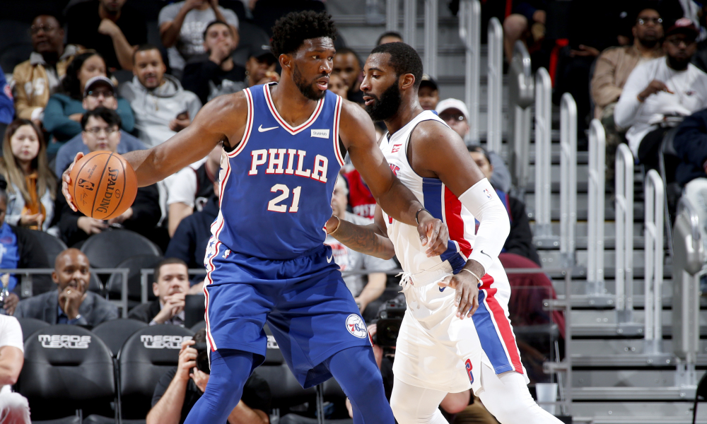
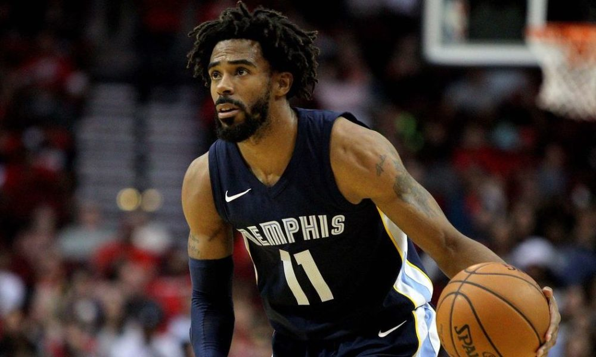

Game 1: Sacramento Kings at Milwaukee Bucks
My Pick:
Milwaukee Bucks
Why I'm Rolling with them:
De'Aaron Fox has been getting a lot of praise on this blog lately, and last game he proved why. Getting his first triple double is a good sign of things to come. Having Bjelica has been great for the Kings, however the Kings don't have the personnel to stop Giannis, and their lackluster defense won't be enough to stop this high-octane Bucks offense. The Kings are a good young team, and in a year or two they could be what the Bucks are now. But right now? Bucks, 132-118.
Game 2: Philadelphia 76ers at Brooklyn Nets
My Pick:
Philadelphia 76ers
Why I'm Rolling with them:
Philadelphia played last night, which is normally something I get pretty cautious about. But what I saw from Embiid reassured me. He's putting forward a bid for MVP, averaging 29/13 so far in the season with stellar defense. He's become adept at drawing fouls, and against Allen, a relatively inexperienced center, he should have no problem continuing his dominance. The Nets just lost a tough one to Houston, which saw a far weaker defense hold them to 111, still a lot but I have no doubt this Sixers team will hold them to under 110, as they win 117-108.
 Joel Embiid has been dominant to start the yearGame 3: New York Knicks at Washington Wizards
My Pick:
New York Knicks
Why I'm Rolling with them:
The Knicks have looked good lately, beating a Dallas team I thought would have the edge on them. Conversely, the Wizards have looked like hot garbage and are off to a 1-7 start. I am not sure when their game is gonna turn around, but they look like a bottom tier team with no real direction. Hardaway Jr. is in for a good game against this abysmal Washington defense, as the Knicks win 119-109.
Game 4: Orlando Magic at San Antonio Spurs
My Pick:
San Antonio Spurs
Why I'm Rolling with them:
The Spurs played last night and looked great against the Pelicans, a team that's the upgraded version of the Magic. Both the Pelicans and Magic have strong Inside presence, and weaker guard depth (discounting Jrue Holiday, who is more of a shooting guard than point guard). Because of this, I have full confidence in giving the win during this game to the Spurs, with stellar play from DeRozan and Aldridge being more than enough. Gasol should also be able to have a good game against this younger Magic core. Spurs, 111-103.
Game 5: Memphis Grizzlies at Phoenix Suns
My Pick:
Memphis Grizzlies
Why I'm Rolling with them:
Both the Grizzlies and Suns were slated to be subpar teams this season, and have so far been trending in opposite directions. Having Canaan back should help the Suns a little, having Booker back will help them a lot. However, even with that I don't think this Suns team has what it takes to steal a win off of the Grizzlies. JJJ should be able to avoid foul trouble against the weak PF spot on the Suns, allowing him to get some extra playtime tonight. Grizzlies 107-99.
 Mike Conley, finally back from injury and balling outGame 6: Minnesota Timberwolves at Portland Trailblazers
My Pick:
Portland Trailblazers
Why I'm Rolling with them:
Initially I had Minnesota winning this one, before hearing that Jimmy Butler would be sitting for tonight. That was enough to change my mind, especially with Derrick Rose questionable as well. The issue with this Minnesota team is that other than Rose and Jimmy, they haven't demonstrated any real playmaking abilities. KAT looks very lackluster. Portland on the other hand has shown a lot of depth and ability to create, even if they lost to the Lakers last night. Portland wins this one, 119-107.
Game 7: Toronto Raptors at Los Angeles Lakers
My Pick:
Toronto Raptors
Why I'm Rolling with them:
This hinges on whether or not Kawhi plays tonight, but for now I really like this matchup for Toronto. They have one of the better rotations to guard Lebron and the assortment of athletic wings this Lakers team has. In addition, their bench bigs are far better than the Lakers, and I see no reason why they can't rack up points with their second unit. Additionally, LA played last night. Things are looking up for the Raptors as they win 120-113.